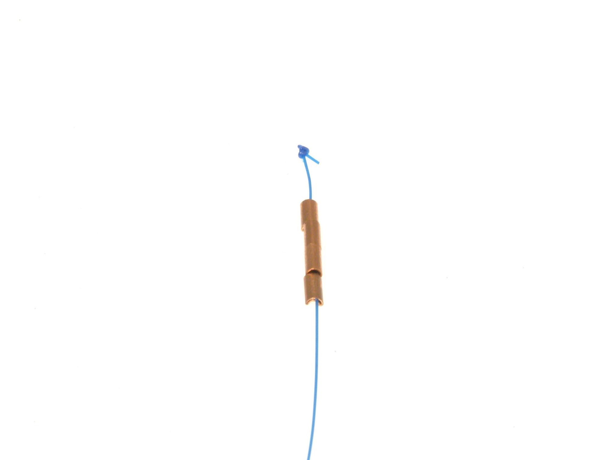
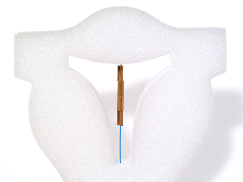

the GyneFix


图片来源：Museum of Contraception and Abortion
- 发明者：Dr. Dirk Wildemeersch
- 时间： 1984年
- 材质： 铜
通过将铜套压在一段聚丙烯螺纹上，Dr. Wildemeersch实现了其去除节育环框架的设想。为了防止它被排出体外，Dr. Wildemeersch在前端打上一个结，并借助尖头探针使之插入子宫肌层。
除了提供避孕措施外，IUCI还可用于将其他药物输送至子宫腔。